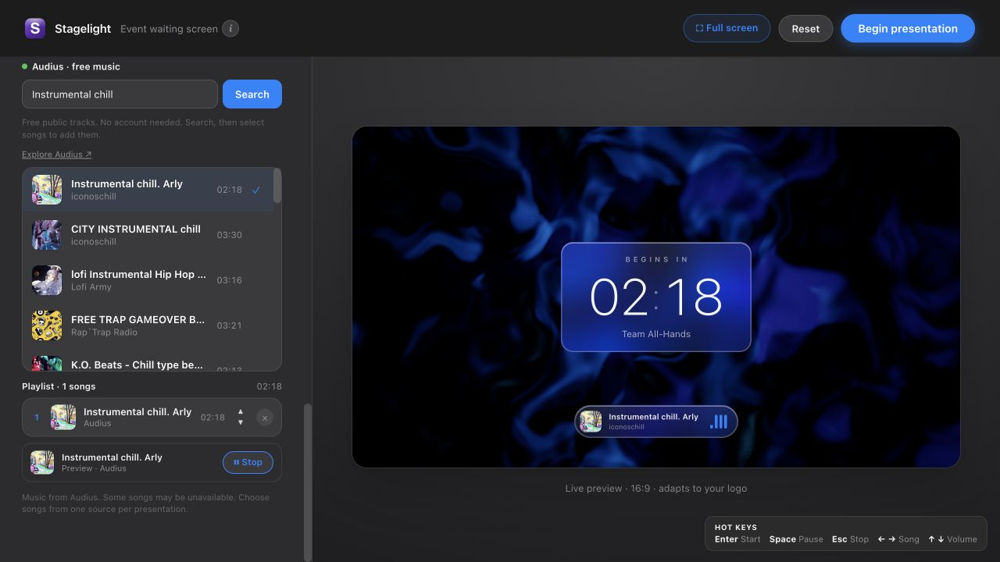
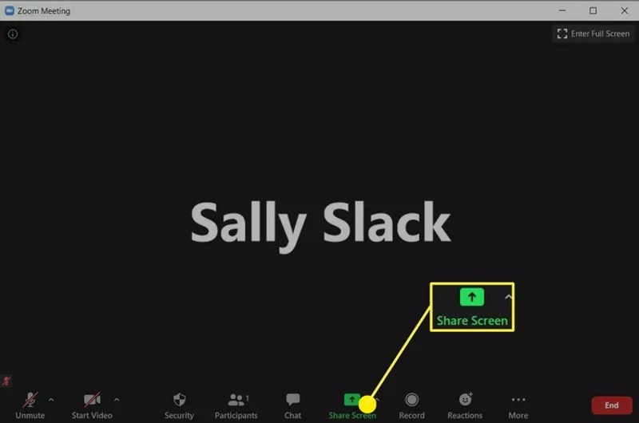
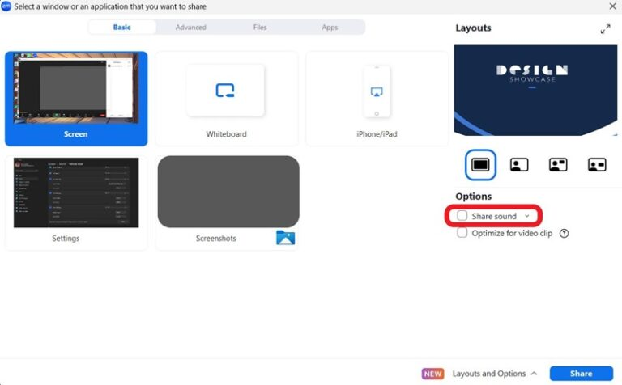
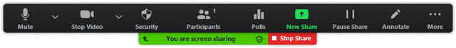
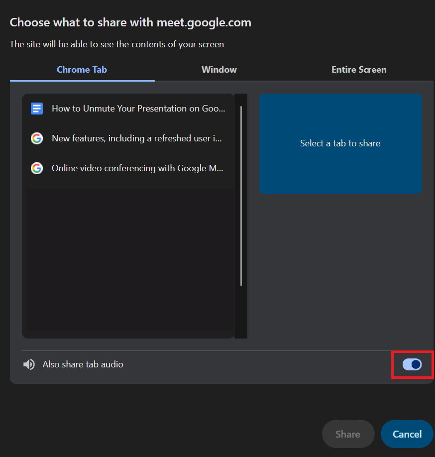
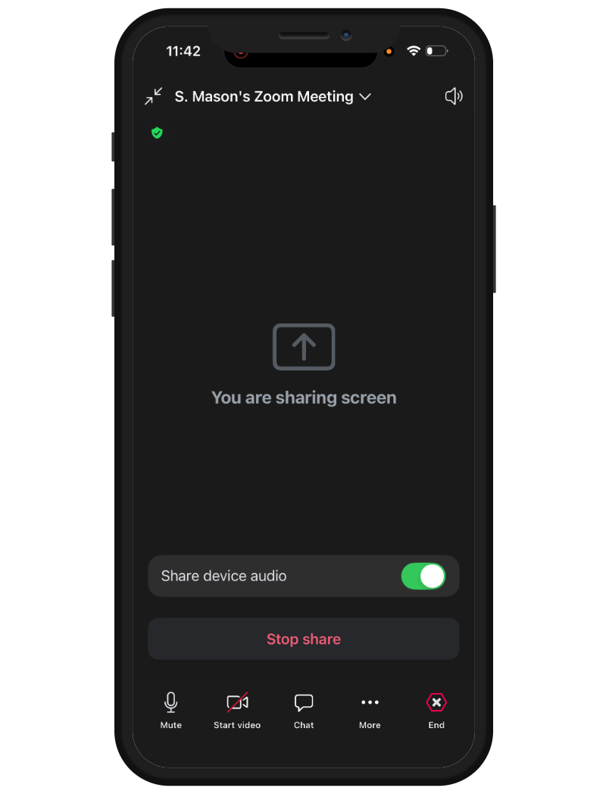

MEETING SETUP
Stagelight
with Zoom.
Share your countdown and computer sound in a Zoom meeting.
Which app do I need?
Stagelight is a website. There is no Stagelight download to install. “Downloaded app” below means your meeting app.
The downloaded Zoom Workplace app runs on Windows or Mac. Stagelight stays open in your browser. Use the numbered steps below.
Before you share
Use headphones. Close other noisy tabs. Try a music preview first. Share only the window or tab you want attendees to see.
Real screenshots from published tutorials. App versions and example window names may differ; follow the named controls.
Computer: downloaded app
Prepare your screen
In Stagelight, add your title and music. Keep the app in its own browser window.

Your setup stays in Stagelight. This example has one Audius song selected.Screenshot: Stagelight. Click image to enlarge. Open the sharing picker
In your Zoom meeting, click Share Screen or Share.

Find Share Screen in the meeting controls. Newer versions may say Share.Screenshot: Apeaksoft. Click image to enlarge. Choose the Stagelight window
Click the window tile containing Stagelight. The example below has different window names.

Select your Stagelight window. This example lists other windows.Screenshot: AirDroid. Click image to enlarge. Turn on sound and share
Check Share sound, then click the blue Share button. Attendees now receive the selected screen and computer audio.
Select your Stagelight window. This example lists other windows.Screenshot: AirDroid. Click image to enlarge. Start your countdown
Switch to Stagelight and click Begin presentation at the top right. Ask an attendee to confirm the picture and sound.
Your setup stays in Stagelight. This example has one Audius song selected.Screenshot: Stagelight. Click image to enlarge. Stop sharing when ready
Use Esc in Stagelight to stop the presentation. Then return to Zoom and click Stop Share.

Use Stop Share to end the broadcast, without ending the meeting.Screenshot: Zoom Support. Click image to enlarge.
NO MEETING APP DOWNLOAD
Computer browser
- Joining Zoom without its download? In the web meeting, choose Share Screen, select the Stagelight browser tab, and enable Share tab audio if offered. If that option is missing, use the desktop app. Mobile browser audio sharing is not supported.
- Select Stagelight in the browser picker.
- Enable tab audio, then Share.
- Return to Stagelight and begin.

Example Chrome picker shown for Meet. Teams and Zoom use a similar browser dialog with their own site name.
DOWNLOADED MEETING APP + STAGELIGHT IN YOUR BROWSER
Phone or tablet
Android
- In the Zoom mobile app, tap Share → Screen and accept the screen-capture prompt
- Enable Share Audio
- Switch to Stagelight in your browser, then begin
- Return to Zoom and tap Stop Share when finished.

iPhone & iPad
- In the Zoom mobile app, tap Share → Screen → Start Broadcast
- Turn on Share Device Audio in Zoom’s sharing controls
- Open Stagelight in Safari and begin
- Return to Zoom to stop sharing.
Test on your device first
These are the meeting provider’s sharing steps. Stagelight playback while switching between mobile apps is not verified. Your phone may pause music or limit screen audio. If that happens, present from a computer.
Mobile sharing can expose your whole screen and notifications. Enable Do Not Disturb and stop sharing before opening anything private.
Based on Zoom sharing documentation ↗. Button names can vary by version and device.
No sound in the meeting?
If attendees hear nothing, check Share sound in the sharing toolbar. Confirm Stagelight is audible on your computer, then try sharing again with sound enabled.
These steps use the Zoom desktop app. The web app may offer tab audio instead. On a Mac, Zoom may need screen and system audio recording permission.
Hearing music locally does not prove the meeting hears it. Ask an attendee before people arrive.
Need another hand?
Find audio fixes or tell us what went wrong.